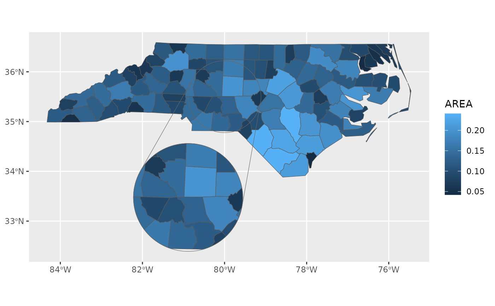

This allows a default inset configuration to be provided to avoid having to repeat it for each layer. Any layer that is inset-aware can use this as the default configuration if none is specifically provided to that layer. This coord also expands the axis limits to include the inset area.
Arguments
- inset
Inset configuration; see
configure_inset().- ...
Arguments passed to
ggplot2::coord_sf()
Examples
library(ggplot2)
nc <- sf::st_read(system.file("shape/nc.shp", package = "sf"), quiet = TRUE)
ggplot(nc) +
geom_sf_inset(aes(fill = AREA)) +
geom_inset_frame() +
coord_sf_inset(inset = configure_inset(
centre = sf::st_sfc(sf::st_point(c(-80, 35.5)), crs = 4326),
scale = 1.5, translation = c(-50, -140), radius = 50, units = "mi"))
#> Warning: The `radius` argument of `configure_inset()` is deprecated as of ggmapinset
#> 0.4.0.
#> ℹ Use `shape = shape_circle(centre, radius)` instead.
